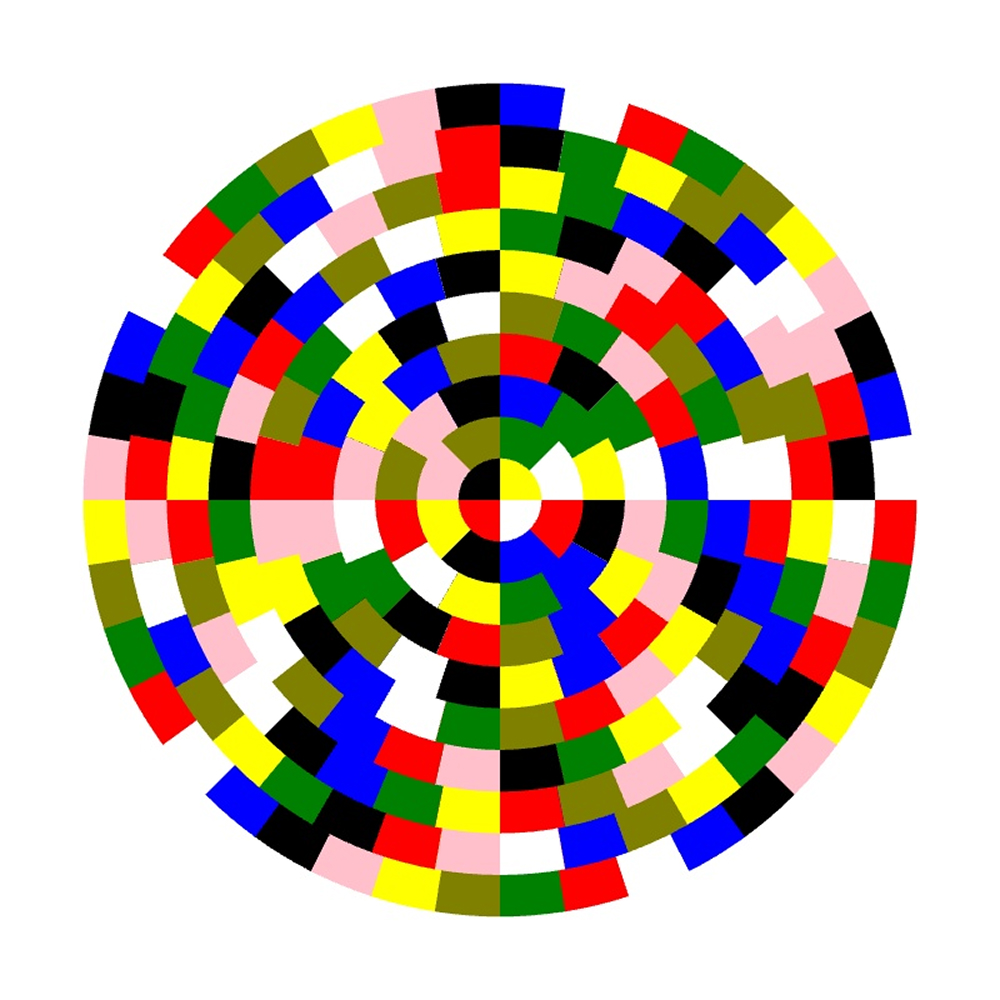
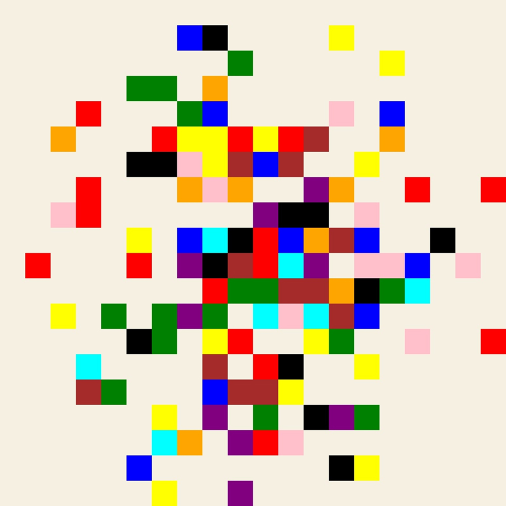
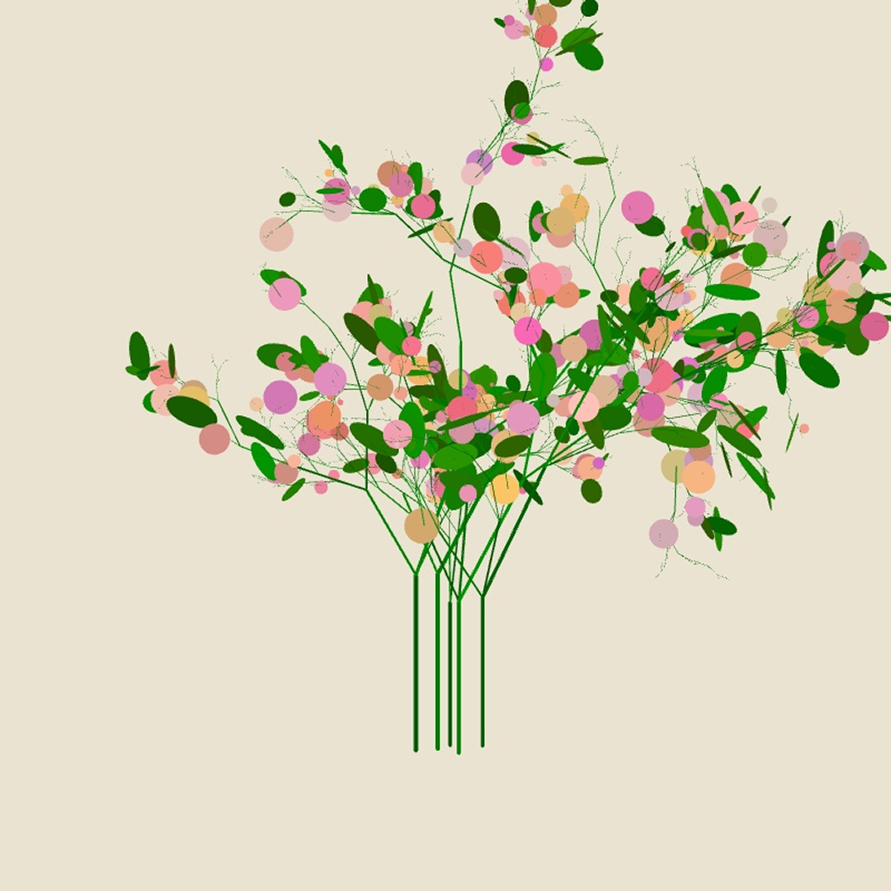
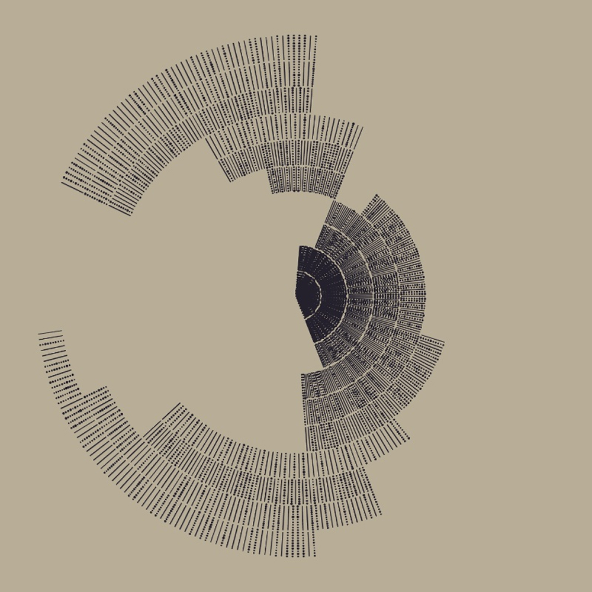
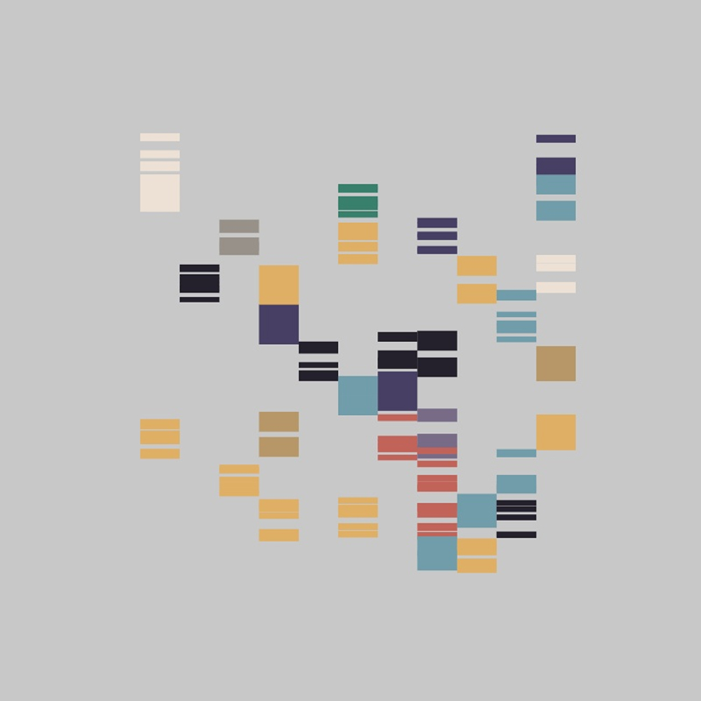

openSnippet
openSnippets is a platform for sharing and exploring creative code snippets using p5.js! Living in these wild times where we can basically build anything, I decided to dive into openSnippets as my own little exploration. This was my first time tackling a full-stack project from scratch – I set up the server, configured the database, wrote both the backend and frontend, designed the whole thing, and honestly, after a few iterations of "why isn't this working?!" everything just clicked. OpenSnippets became this platform where people can share and discover creative code snippets using p5.js, and I'm pretty stoked about how it turned out. It was one of those projects where I threw myself into the deep end and somehow managed to swim, with a little help from AI along the way, of course.





